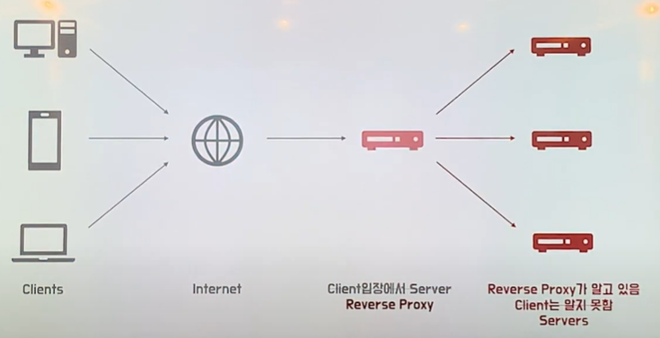
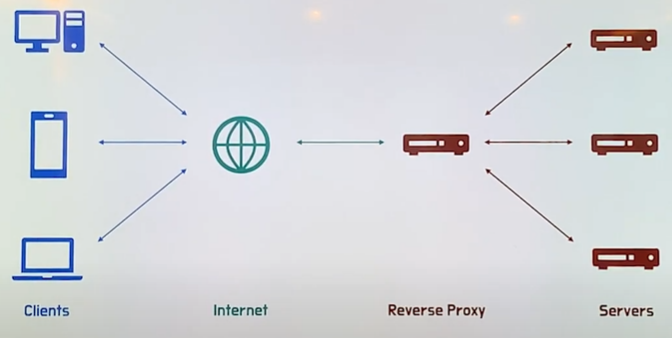

Proxy (대리)
프록시는 "대리"를 뜻하며, 컴퓨터 네트워킹에서는 클라이언트와 서버 사이에 중개 역할을 수행하는 서버나 소프트웨어를 의미해. 클라이언트의 요청을 받아 서버에 전달하고, 서버의 응답을 클라이언트로 반환하는 방식으로 동작하지.
프록시(Proxy 서버)의 주요 역할
- 트래픽 중계
- 클라이언트가 직접 서버와 통신하지 않고, 프록시 서버를 통해 통신함으로써 요청과 응답이 간접적으로 이루어져.
- 익명성 보장
- 클라이언트의 IP 주소를 숨기고, 프록시 서버의 IP 주소로 요청을 전달하여 사용자의 익명성을 높일 수 있어.
- 보안 및 필터링
- 외부 서버와의 통신을 제어하거나 악성 사이트를 차단하는 보안 정책을 적용할 수 있어.
- 캐싱
- 자주 요청되는 데이터를 캐싱하여 서버 부하를 줄이고, 응답 시간을 단축할 수 있어.
- 부하 분산
- 요청을 여러 서버에 분산 처리하여 서버 성능과 가용성을 높일 수 있어.
Forward Proxy

- Forward Proxy의 특징
- 캐싱
- 클라이언트가 요청한 내용을 캐싱
- 예시
- 한 유저가 “오늘 날씨 어때?”라고 물어봤을 때, 처음에는 서버에서 가져오지만, 이후 캐시에 저장하여, 다른 유저가 똑같이 요청하는 경우에 서버까지 가는 것이 아니라 캐시를 확인하여 다시 반환을 진행한다.
- 즉, Foward Proxy가 뒤를 거치지 않고 바로 응답을 진행한다.
- 전송 시간 절약
- 불필요한 외부 전송 x
- 외부 요청 감소
→ 네트워크 병목 현상 방지
- 익명성
- 클라이언트가 보낸 요청을 감춰줌
- 구조가 다음과 같다고 쳐보자
- 클라이언트가 서버에 직접 요청을 하는 형태이고, 그 데이터가 고대로 전해진다.
- 하지만 가운데에 만약 Foward Proxy를 넣게 될 경우
- 클라이언트가 요청했지만, 서버 입장에서는 Forward Proxy가 요청된 것처럼 생각됨
- 따라서 Server가 응답 받은 요청을 누가 보냈는지 알지 못하게 한다.
- Server가 받은 요청 IP = Proxy IP
- 캐싱
Reverse Proxy

- 보는 것과 같이 흐름이 반대이다.
- Reverse Proxy 특징
- 캐싱
- 보안
- 서버 정보를 클라이언트로부터 숨김
- Client는 Reverse Proxy를 실제 서버라고 생각하여 요청
- 즉, 실제 서버의 IP가 노출되지 않음
Load Balancing
부하 분산